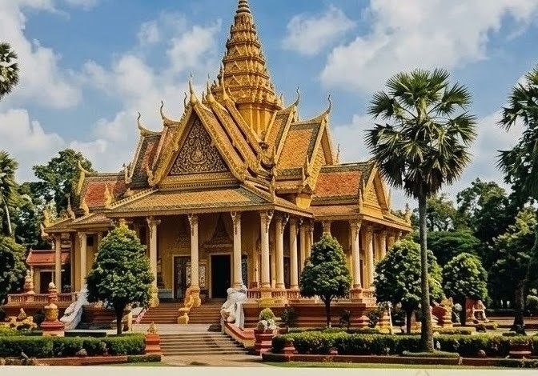

Welcome to Pchum Ben Day
Pchum Ben Day is one of the most important traditional festivals in Cambodia. It is a time for Cambodians to remember and pay respect to their ancestors who have passed away.
During this period, people visit pagodas, make offerings of food, fruits, flowers, and other items to the monks, and pray for the souls of their ancestors.
Learn More About Pchum Ben